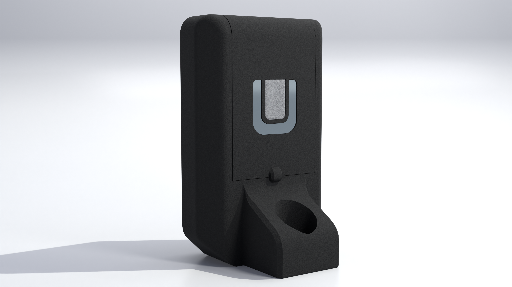
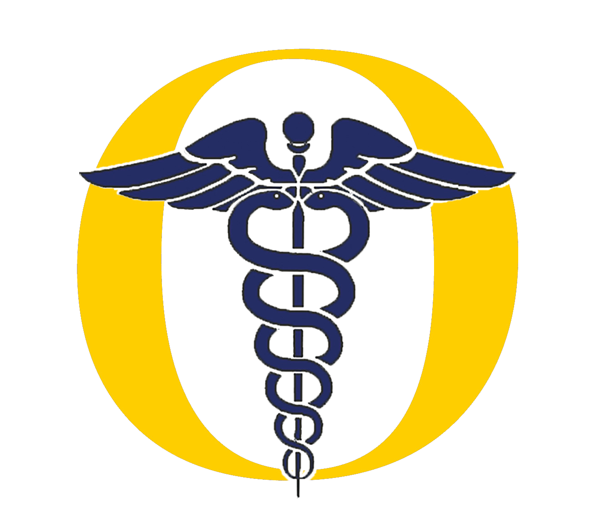
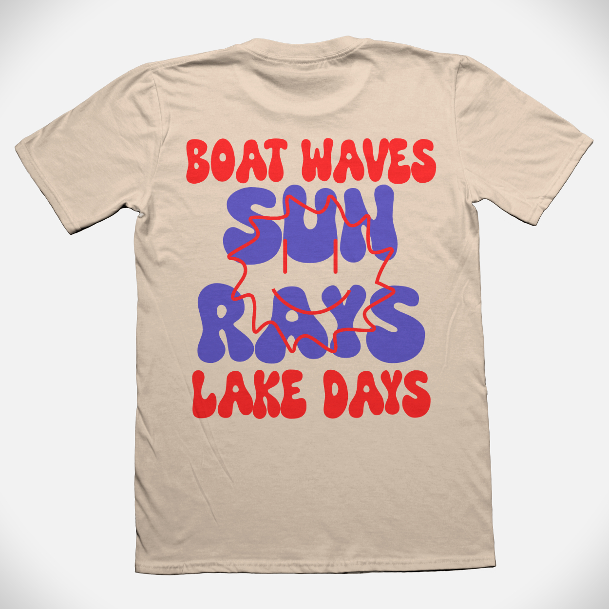
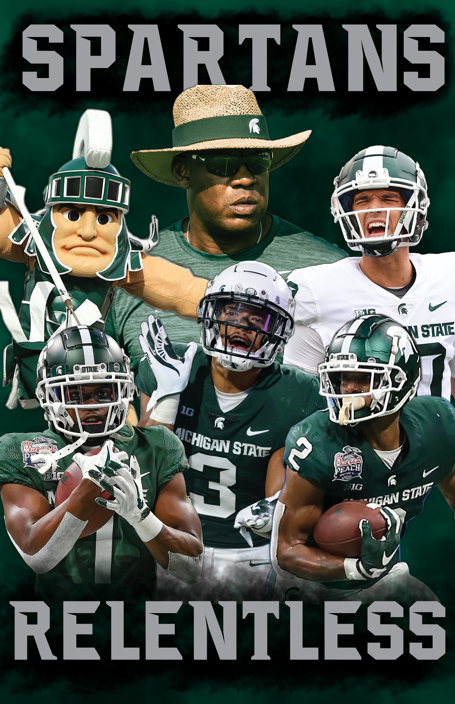

Novy
DESIGNER.
MARKETER.
BUILDER.
I'm a Creative & Marketing Professional based in Royal Oak, MI. My background covers graphic design, video production, 3D visualization, marketing automation, and SEO, with a focus on work that actually moves the needle.
I graduated from Michigan State University with a 3.8 GPA in Games & Interactive Media and a minor in Graphic Design. I've done Blender product renders for a Tokyo robotics startup and rebuilt the digital presence of a cybersecurity firm from the ground up. The range is the point.
I care about the craft at every level, from the big strategic picture down to the kerning.
PROJECTS








EXPERIENCE
- Primary liaison to an external marketing agency, coordinating on campaign strategy, reviewing deliverables, and implementing web and digital optimizations.
- Moved average Google search rankings from roughly position 35 to position 7 for competitive cybersecurity keywords through SEO-focused page development in a PHP CMS.
- Built automation systems in Microsoft Power Automate including a content approval workflow, an automated content calendar, and a cross-team request intake process.
- Connected intake forms to CRM platforms and email marketing campaigns, building lead workflows that carried prospects from first contact through campaign enrollment.
- Trained and deployed an AI-powered website chatbot, tuning the knowledge base and response logic to match brand voice and improve accuracy.
- Produced video content and visual assets for marketing campaigns, trade events, and sales materials.
- Tracked and reported on performance across Meta, LinkedIn, YouTube, GA4, and Google Search Console.
- Maintained electronic networking and social media presence for the Center.
- Supported development of web-based media for marketing and promotion at trade and partner events.
- Captured and edited video at Center events using Adobe Premiere Pro.
- Collaborated with the marketing lead to enhance the XELA website using photorealistic 3D renders.
- Modeled, textured, and rendered 3D product models in Blender for use across the company website and marketing materials.
- Created application scenes and animations demonstrating XELA product capabilities for marketing videos.
- Received top performance review from leadership for quality and impact of deliverables.
- Designed three modern logo variations for the OTHS Athletic Training Department, replacing the department's previous branding.
- Created 26 print posters and digital graphics using Photoshop and Illustrator for the OTHS Athletic Department, sold to fans and athletic boosters.
- Met with clients to define design vision, then executed across print and digital media.
EDUCATION
LET'S
WORK.
Open to creative, marketing, and design opportunities. If you have a project in mind or just want to connect, reach out.
Download my resume for a full look at my experience, skills, and background.
Download Resume